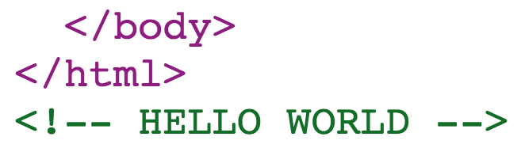

The {{content-for}} helper
Comparison with Rails
/ layout.html.slim
html
head
= yield :head
/ index.html.slim
- content_for :head do
javascript:
console.log('Hello world');
p Hello world
Ember CLI Defaults
Implementation
Available "Hooks"
- head
- head-footer
- body
- body-footer
- config-module
- app
- test-header-footer
- test-body-footer
Addons can also implement this method and could also define additional types (eg. 'some-addon-section').
Example Addon Usage
Create an "in-repo" addon:
$ ember generate in-repo-addon soundcloud
Implement contentFor in add-on's entry point index.js.
module.exports = {
name: 'soundcloud',
isDevelopingAddon: function() {
return true;
},
contentFor: function(type, config) {
if (type === 'body') {
return '<script src="//w.soundcloud.com/player/api.js"></script>';
}
}
};
Update Content Security Policy
In our example, we added a remote resource, so we'll need to update CSP to reflect in config/environment.js
module.exports = function(environment) {
var ENV = {
contentSecurityPolicy: {
'script-src': "'self' w.soundcloud.com",
'connect-src': "soundcloud.com",
'frame-src': "'self' w.soundcloud.com"
}
}
}
Updating Content Security Policy from add-on
It's coming! There's an RFC.
https://github.com/ember-cli/rfcs/pull/22
More Control?
Enter ember-cli-inline-content!
https://github.com/gdub22/ember-cli-inline-content
$ npm install --save-dev ember-cli-inline-content
Displaying a string
// ember-cli-build.js
var app = new EmberApp(defaults, {
inlineContent: {
'string-content': {
content: ''
}
}
});
{{! app/index.html }}
</html>
{{content-for 'string-content'}}

Inline Rendering File Contents
Content is rendered inline and wrapped in <script> or <style> if applicable.
inlineContent: {
'javascript-content': 'lib/file.js',
'css-content': 'lib/file.css',
'text-content': 'lib/file.txt'
}
{{content-for 'javascript-content'}}
{{content-for 'css-content'}}
{{content-for 'text-content'}}
Post-Process Content
Use postProcess hook to modify content before injection.
inlineContent:
'post-process-content': {
file: 'lib/config.js',
postProcess: function(content) {
return content.replace(/\{\{CONFIG_THING_ID\}\}/g, config.CONFIG_THING_ID);
}
}
}
if (environment === 'development') {
ENV.CONFIG_THING_ID = '123';
}